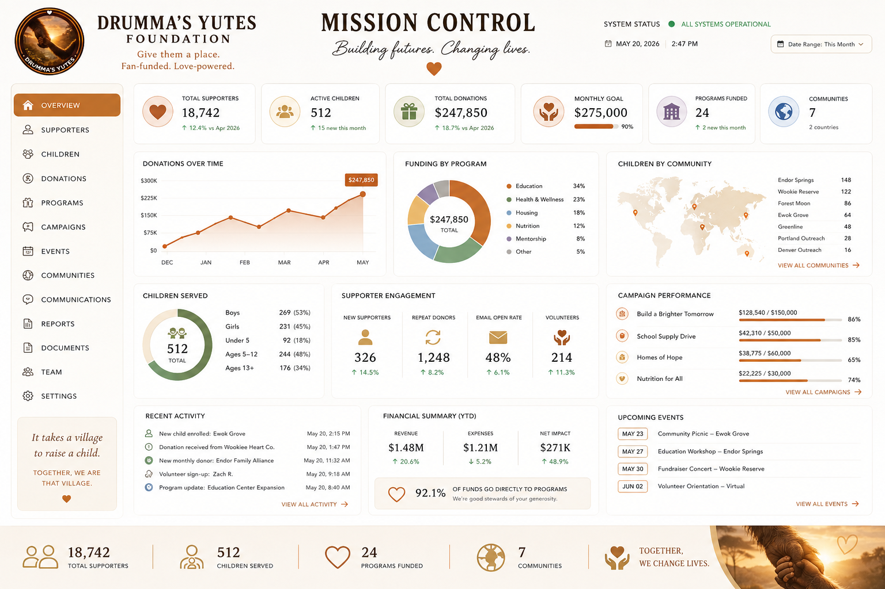
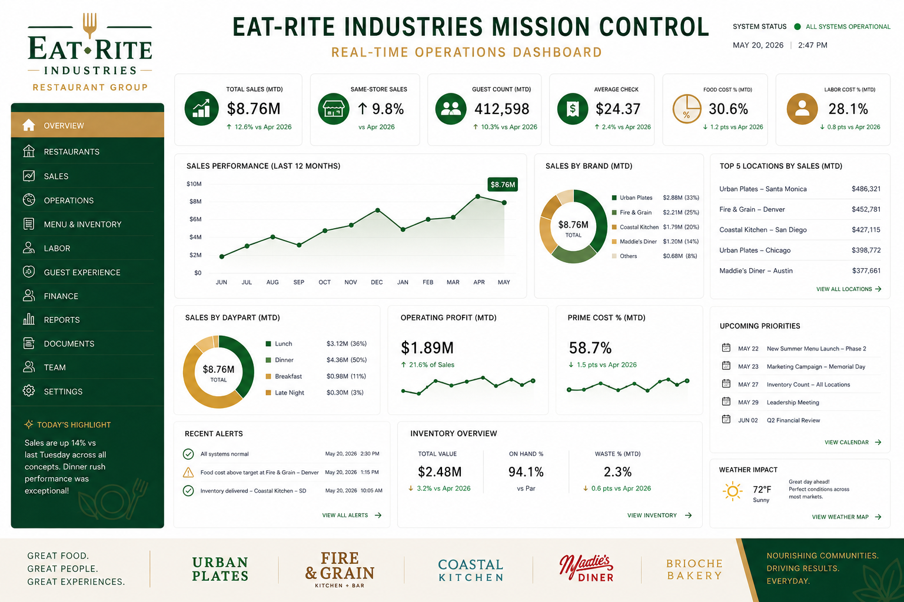
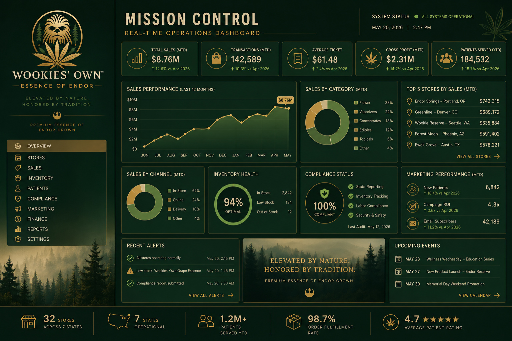
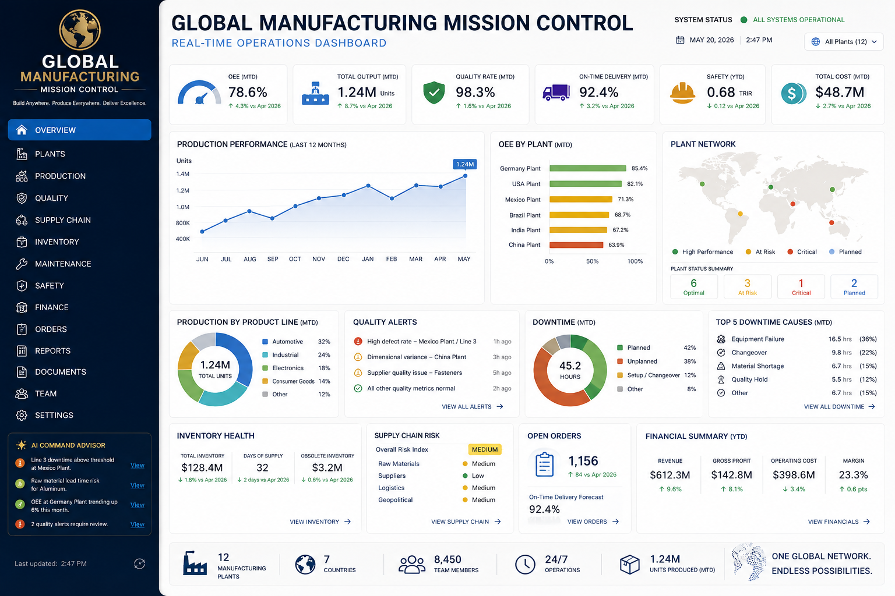
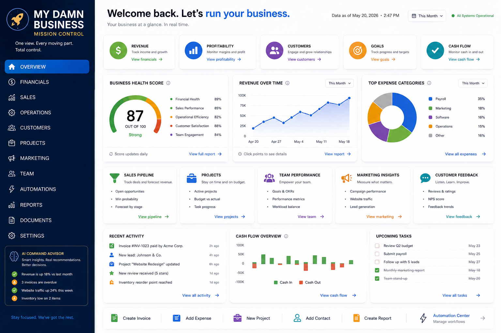
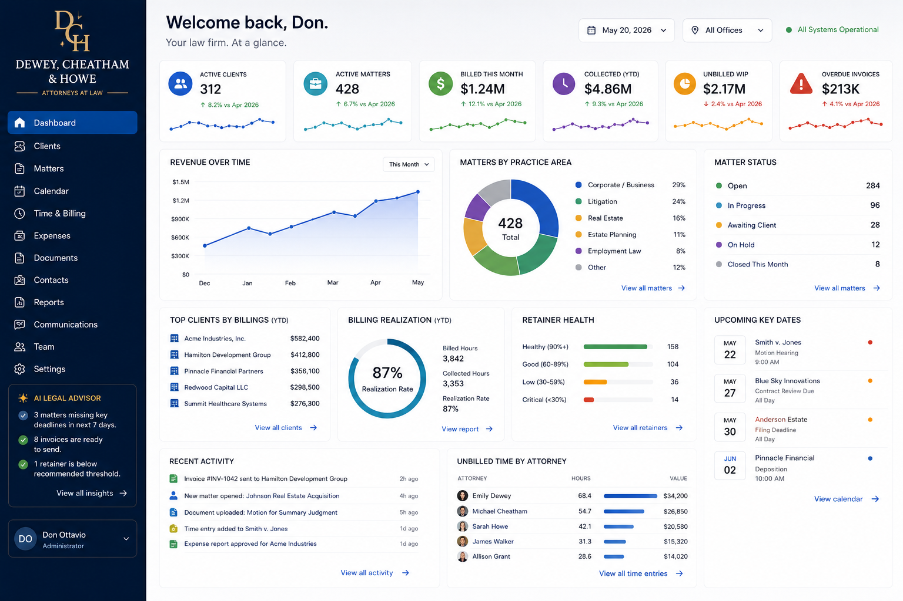

Operations at a glance
A command center for coordinating the moving parts behind the work.
Custom control centers · built around your work
CMS Tech designs and continuously improves custom business automations that become control centers for the work your organization needs to manage—operations, clients, projects, money, decisions, and everything in between.

A command center for coordinating the moving parts behind the work.

A practical interface for turning requests, records, and follow-up into momentum.

A unified view that brings signals, workflows, and priorities into one place.

A control center for distributed teams, markets, and operations.

A practical operating view for keeping the whole business moving.

A practical operating view for keeping the whole business moving.

A practical control center for keeping matters, clients, and deadlines moving.
See your custom business control dashboard? We do.
Reach out to CMS Tech Today